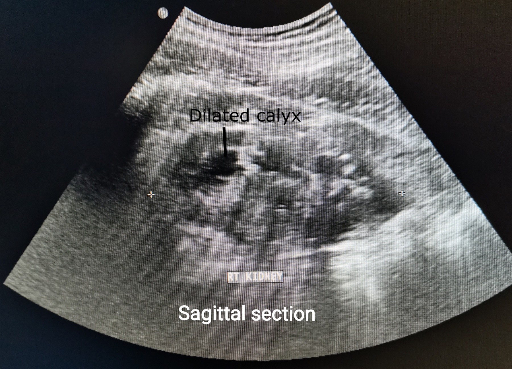

Página 3 · Parte B · Ureter direito e a falsa litíase
Gestante de 28 semanas com dor lombar de leve intensidade e ultrassom renal mostrando dilatação calicial direita leve. A pergunta é: litíase ou fisiologia?
Abertura em vinheta
Gestante com dor lombar e ultrassom mostrando dilatação calicial à direita, leve. O plantão grita “litíase”. Antes de fechar o cálculo, a fisiologia pede a palavra.
Dextroversão / dextorotação uterina
O útero roda para a direita (dextroversão / dextorotação). Esse é o dado funcional — não reabre atlas de pelve.
Dilatação calicial direita leve pode ser fisiológica
Dilatação calicial à direita, leve, no ultrassom de gestante com dor lombar pode ser modificação fisiológica — não fecha diagnóstico de cálculo renal sozinha. À esquerda, esse padrão de dilatação fisiológica não é o esperado da mesma forma — o lado direito é o da armadilha.
Progesterona + compressão = estase — e a armadilha da litíase
Há lentificação do trânsito ureteral por relaxamento da musculatura lisa do ureter (motor progesterona). Relaxamento ureteral + compressão/rotação favorecem estase e dilatação calicial discreta à direita.
Regra de ouro: cuidado para a modificação fisiológica não enganar e empurrar o raciocínio para litíase na urgência/emergência sem outros critérios.
Ponte doença: Litíase verdadeira, obstrução real e urosepsis existem — o ponto é não diagnosticar por default com dilatação leve D isolada.
evita TC desnecessária, ansiedade e conduta invasiva em cima de fisiologia.
Útero à direita + progesterona no ureter → dilatação D leve pode ser fisiológica; litíase exige mais que isso.
se o rim filtra por dois, o pulmão ventila por dois — e a falta de ar do terceiro trimestre ganha mecanismo.
Dor lombar + dilatação D leve ≠ litíase automática

P3 dilatação fisiológica gestacional (analogia cuidadosa)
Ultrasound of right kidney moderate hydronephrosis (dilated calyces). Photo: Cerevisae, 2022. Licensed under CC BY-SA 4.0. Source: https://commons.wikimedia.org/wiki/File:Ultrasound_of_right_kidney_moderate_hydronephrosis.jpg
Quiz
Dilatação calicial direita leve em gestante com dor lombar:
- Virada: lado direito + leveza da dilatação = armadilha clássica.
- (A) salta para conduta. (C) inverte o lado da armadilha. (D) confunde com A14.
- Por que cair na A: US “dilatado” dispara reflexo de urolitíase do adulto.
O relaxamento do ureter na gravidez se liga principalmente a:
- Virada: motor 2 (progesterona) + mecânica da dextroversão.
- (A)/(C)/(D) misturam eixos sem nexo ureteral.
- Por que cair na D: volume está em alta na cabeça do aluno depois do lab.